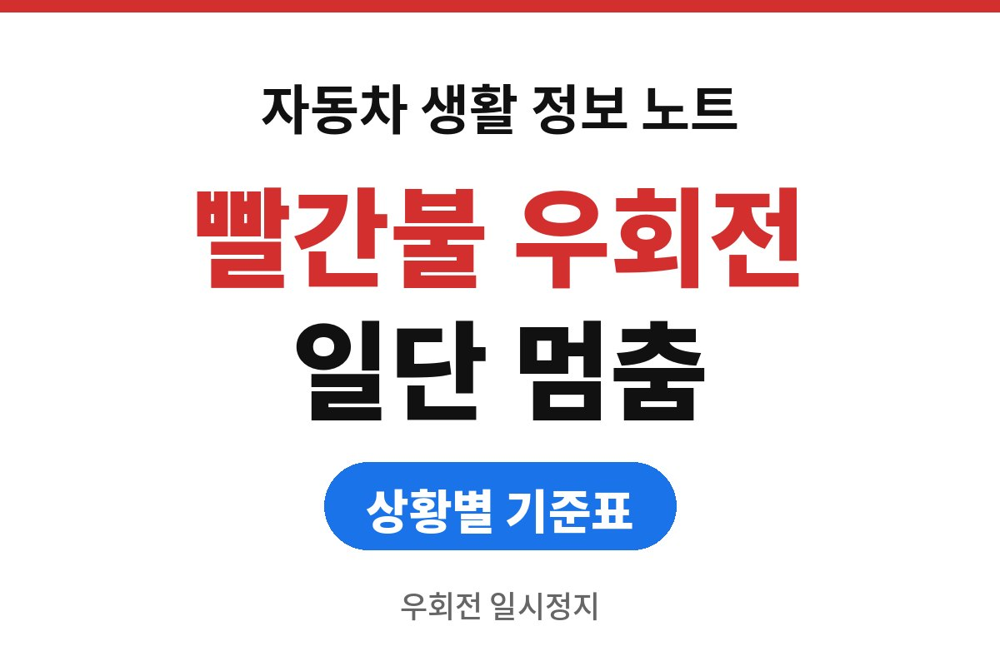
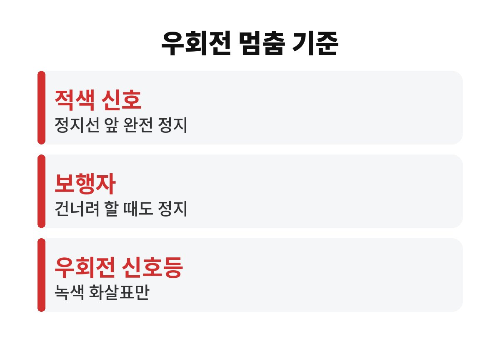
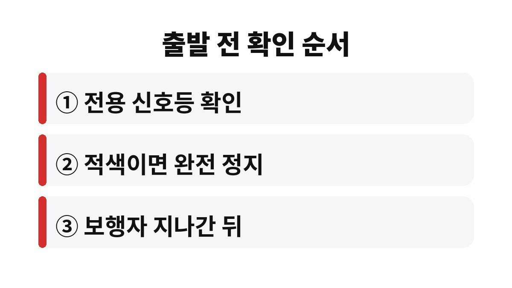

우회전 일시정지는 앞쪽 차량신호가 빨간불일 때와 횡단보도에 보행자가 있거나 건너려 할 때 반드시 멈춰야 하는 규칙이다.
같은 교차로라도 신호 색깔과 보행자 위치에 따라 멈출 곳과 출발 시점이 달라서, 단속 현장에서 가장 많이 헷갈리는 부분도 여기다.
도로교통법 개정으로 2022년 7월부터 보행자가 횡단보도를 건너고 있을 때뿐 아니라 건너려고 할 때도 운전자는 멈춰야 한다.
2023년 1월부터는 교차로에서 앞쪽 차량신호가 적색이면 우회전 전에 정지선이나 횡단보도 앞에서 먼저 멈춘 뒤 진행하도록 바뀌었다.
경찰청은 2026년 4월에도 우회전 집중단속을 벌였고, 위반하면 승용차 기준 범칙금 6만 원과 벌점 10점이 붙는다.
| 상황 | 멈추는 곳 | 출발해도 되는 때 |
|---|---|---|
| 전방 차량신호 적색 | 정지선·횡단보도 앞 | 완전히 멈춘 뒤 보행자가 없을 때 서행 |
| 전방 신호 녹색, 보행자 있음 | 우회전 뒤 만나는 횡단보도 앞 | 보행자가 다 건넌 뒤 |
| 전방 신호 녹색, 보행자 없음 | 멈출 의무는 없음 | 서행하며 통과 |
| 우회전 신호등 설치 | 정지선 | 녹색 화살표가 켜졌을 때만 |
| 어린이보호구역 신호 없는 횡단보도 | 횡단보도 앞 | 보행자 유무와 관계없이 일단 멈춘 뒤 |

속도를 줄이며 슬금슬금 지나가는 것은 일시정지로 보지 않는다.
차가 완전히 멈춘 상태를 만든 다음 좌우와 횡단보도를 보고 천천히 출발하면 된다.
정지선을 넘어 횡단보도 위에 차를 세우는 것도 보행자 통행을 막는 위반이 될 수 있다.
앞 신호가 녹색이면 우회전 자체는 가능하다.
다만 돌고 나서 만나는 횡단보도에 보행자 신호가 켜져 사람이 건너고 있거나, 보도 끝에 서서 건너려는 사람이 보이면 그 앞에서 멈춘다.
보도 위 사람이 건널 생각인지 애매할 때가 가장 어렵다.
법 문구가 건너려고 하는 때까지 포함하므로, 판단이 서지 않으면 멈추는 쪽이 안전하고 단속에서도 다툼이 없다.
앞 신호가 녹색이라고 해서 오른쪽 횡단보도 보행자 신호가 꺼져 있다는 뜻은 아니다.
교차로 구조상 차량 녹색과 보행자 녹색이 동시에 켜지는 곳이 많아서, 돌자마자 사람과 마주치는 장면이 흔하다.
그래서 녹색 신호 우회전이 오히려 적색 신호 때보다 보행자와 가까워지는 경우가 생긴다.
교차로에 우회전 신호등이 따로 달려 있으면 그 신호가 우선이다.
녹색 화살표가 켜졌을 때만 우회전할 수 있고, 적색일 때는 보행자가 없어도 기다려야 한다.
아직 설치된 곳이 많지 않아 습관대로 돌다가 걸리는 경우가 생긴다.
어린이보호구역 안에서 신호등이 없는 횡단보도를 만나면 보행자가 보이지 않아도 그 앞에서 일단 멈춰야 한다.
아이들은 키가 작아 주차된 차 뒤에 가려지기 쉽고, 갑자기 뛰어나오는 일이 잦기 때문이다.
등하교 시간대에는 학교 앞 교차로에 단속 인력이 서 있는 경우도 많다.
보호구역 안에서 보행자 보호 의무를 어기면 일반 도로보다 범칙금과 벌점이 무겁게 매겨진다.
회전교차로에서 오른쪽으로 빠져나가는 출구에도 횡단보도가 붙어 있는 곳이 많다.
회전 차로를 도는 동안에는 왼쪽 차량만 신경 쓰게 되어 출구 쪽 보행자를 늦게 발견하기 쉽다.
출구 직전에 속도를 한 번 더 줄이고 횡단보도를 먼저 보는 습관을 들이면 급정거가 줄어든다.
실제 운전에서는 뒤차 눈치 때문에 멈추는 시간이 길게 느껴진다.
그래도 몇 초 기다린 대가가 범칙금 6만 원과 사고 위험을 피하는 것이라면 손해 볼 일이 아니다.
우회전 차로에 들어서는 순간부터 아래 순서를 머릿속으로 따라가면 판단이 빨라진다.

뒤차 경적 때문에 서둘러 나가다 보행자와 부딪히면 책임은 출발한 운전자에게 남는다.
버스나 화물차처럼 차체가 큰 차는 오른쪽 사각지대가 넓어서 한 번 더 멈추고 확인하는 편이 낫다.
승합차는 범칙금이 7만 원으로 승용차보다 높다.
비가 오거나 해가 진 뒤에는 어두운 옷을 입은 보행자가 잘 보이지 않으니 정지 시간을 조금 더 길게 잡는다.
사이드미러만 보지 말고 고개를 돌려 오른쪽 뒤편 자전거와 킥보드까지 확인하면 된다.
우회전 규칙은 바뀐 지 몇 해가 지났지만 교차로마다 신호 체계가 달라 지금도 헷갈린다는 운전자가 많다.
자주 지나는 교차로에 우회전 신호등이 생겼는지 출퇴근길에 한 번 살펴보면 된다.
단속 기준이나 범칙금이 다시 바뀌었는지는 경찰청과 도로교통공단 안내에서 확인할 수 있다.
참고 자료: 경찰청 「우회전 일시정지 집중단속 안내」(2026년 11월 확인) · 도로교통공단 「교차로 우회전 통행방법」(2026년 11월 확인)
※ 2026년 기준 공공기관 안내를 바탕으로 정리한 글이며, 차종과 연식에 따라 기준이 다를 수 있어 차량 설명서와 공식 안내를 함께 확인하길 바란다.